Terminal UI¤
pbi tui opens a terminal UI for what the data lake holds. You browse the
workspaces of your tenant, what is in each of them, who can open it, what it is built from
and what is built on it, and how fresh each part is. A second screen plans, runs and stops
a sync. You do not have to remember a key: press : and search for what you want
to do (see The command palette).
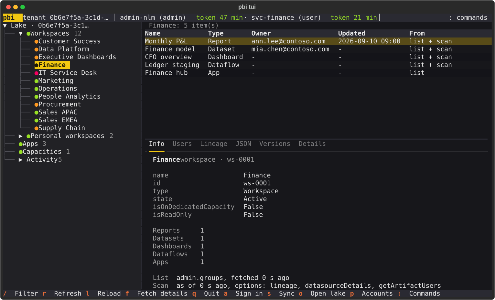
The UI only reads. Browsing reads the lake on your disk (or in S3), so it works without a
token and without a network. The only requests it ever sends to Power BI are those of
pbi sync, which read, and scan, and nothing else.
Install and start¤
The UI needs Textual, which is an optional extra:
pip install "pbi-cli[tui]" # or, in the repository: uv sync --extra tui
It browses the data lake, so set the cache folder once (the lake is its lake folder) and
fill the lake with a sync, from the command line or from the UI itself:
pbi config set-cache-folder ~/PowerBI/cache
pbi sync run default scan --lineage --get-artifact-users # or press s in the UI
pbi tui
A bare pbi in a terminal opens the UI too, when Textual is installed and a cache folder is
set; anywhere else it greets as before. pbi tui --tenant <id> browses another tenant of
the lake than the one of your token, and pbi tui --config pbi-plan.yaml opens it with a
plan file (see With a plan file). The log of the UI
goes to ~/.pbi_cli/tui.log (it would write over the screen otherwise).
The command palette¤
Press : (as in Vim) or Ctrl+P (as in VS Code and Obsidian) anywhere, or click
: commands at the right end of the header. A search bar opens over the screen with every
action of the UI under it, each with a line that says what it does and the key that does the
same. Type a few letters, Enter runs the highlighted one, Esc closes the bar.
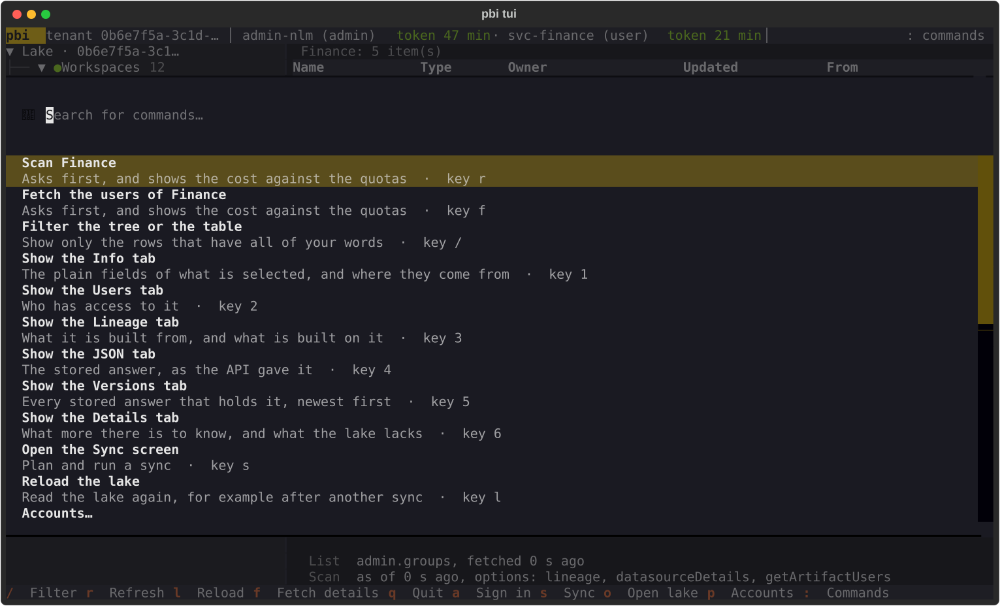
It narrows as you type, and finds a command by other words for it (login finds Sign in,
cancel finds Stop the sync):
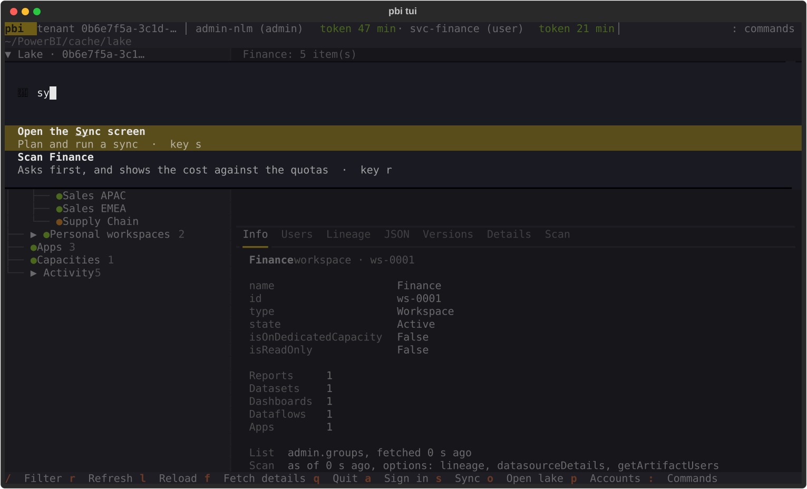
What it lists is what can be done now, so nothing in it is a dead end:
| Where | Commands |
|---|---|
| the Explorer | fetch again what is selected (it says what: Scan Finance, Fetch the lists of the tenant, Fetch what you can see, ...), fetch the details the selected item lacks (Fetch the users and data sources of Finance model), filter, clear the filter, show a tab |
| the Sync screen | run the sync, show a tab |
| while a sync runs | stop the sync, from any screen |
| everywhere | open the Explorer or the Sync screen, reload the lake, choose the tenant, accounts, sign in, make a stored profile the active one of its group (Make svc-finance the active user account), store a new token for a profile, open another lake, the work lake, or one you opened lately |
| Textual | its own commands: the theme, the key list, a screenshot, quit |
On a lake that is only looked at (view only) there is nothing
to sign in to and nothing to fetch, so those commands are not listed. Two things work by what
you type rather than by a list: a name (a workspace, report, dataset, dashboard or
dataflow) jumps to it, and a place (s3://bucket/lake, /shared/lake, ~/lake) offers
Open lake ..., which opens it view only.
: is an ordinary key, so in a box that you are typing in (a filter, a token, a location) it
is a colon.
The Explorer¤
The Explorer has three parts: a tree of the tenant on the left, a table of what is in the selected node at the top right, and the details of the selected row below it.
Names are shown exactly as Power BI has them. Many are tagged in square brackets
([Confidential]Finance, [Experiment] Test), and the brackets stay: nothing the UI shows
is read as markup, in the tables, the titles, the dialogs and the notices alike.
The tree¤
| Node | What the table lists | Source |
|---|---|---|
| Lake (the top) | each list the lake holds, how many rows it has and how fresh it is | the lists of pbi sync |
| Workspaces | the workspaces; open one to see what is in it | groups |
| Personal workspaces | the same for personal workspaces (they are many, so they are apart) | groups |
| a workspace | its reports, datasets, dashboards, dataflows and apps | the lists, with the newest scan over them |
| Apps | the apps of the tenant (with only a user account: the apps of that account) | apps, or user-apps |
| Capacities | the capacities of the tenant | capacities |
| Activity | the days of audit events in the lake; open a day to see its events, newest first | activity |
The dot before a workspace says how fresh what the lake knows about it is. It is the least fresh of the list of workspaces and the scan of the workspace:
| Dot | Meaning |
|---|---|
| green | fresh: younger than the time to live of its target (a day, for the lists and the scans) |
| yellow | older than that, but less than a week |
| red | a week old or more |
| empty grey circle | not in the lake |
An incremental scan does not fetch a workspace that did not change, so such a workspace counts as scanned as of the start of the last complete scan (with the same options): an unchanged workspace is not shown as old.
A workspace shows what the lake holds of it, and nothing else. After pbi sync run groups,
which fetches only the list of workspaces, every workspace is empty: the title of the table
says that the lists of items are not in the lake (or which of them, when only some are
missing), and the Info tab names each list that is missing (reports, datasets, dashboards,
dataflows, apps). Press s and Run to fetch the plain targets, or r to scan that one
workspace. A workspace that really holds nothing says so, and one that has the lists but was
never scanned says to scan it.
When the last sync tried to fetch a missing list and did not manage, the title says that it
did not bring it, and the Info tab says why, from the state of the sync: the list could not
be fetched (with what Power BI answered: a 403 means that the token is not an
administrator's), or it was held back by a quota (Power BI throttled the requests for
longer than a sync waits; the tenant's quotas are shared with every other tool that uses the
admin APIs, so run the sync again later). The Contents rows of the Info tab say the same
for each list in a few words. The same facts are on the Lake tab of the Sync screen.
The details¤
Press a number, or click a tab, to switch the details of the selected row:
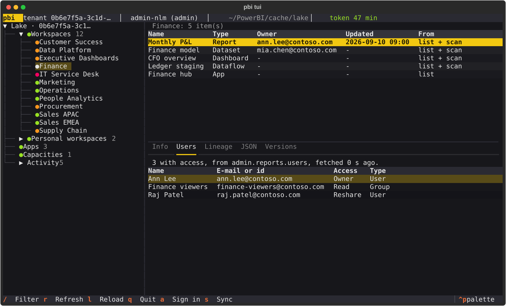
| Key | Tab | What it shows |
|---|---|---|
1 |
Info | the plain fields of the row, where they come from, and how old they are; for a workspace also which accounts see it (Visible to, when the lake holds the lists of a user account) |
2 |
Users | who has access: from what was fetched for the item (report-users, dataset-users, ...), from the list of workspaces fetched with -e users, or from the scan with --get-artifact-users. When the lake does not hold them, the tab says what to fetch, and f fetches them |
3 |
Lineage | what the item is built from and what is built on it (below) |
4 |
JSON | the stored answer, as it came from the API, and the folder of the lake it is in |
5 |
Versions | every stored answer that holds this, newest first: when, which operation, how many rows, how big, by which profile |
6 |
Details | what more there is to know of the item, and what the lake lacks of it: fetched one item at a time |
Details, one item at a time¤
The lists of a sync are cheap (one request for every report of the tenant), but who has
access to each report, or each dataset's data sources, costs one request per item, and
the administrator's quota for it is 200 an hour. So a sync does not keep them unless you name
them (pbi sync run dataset-users), and the UI fetches them for the one item you look at:
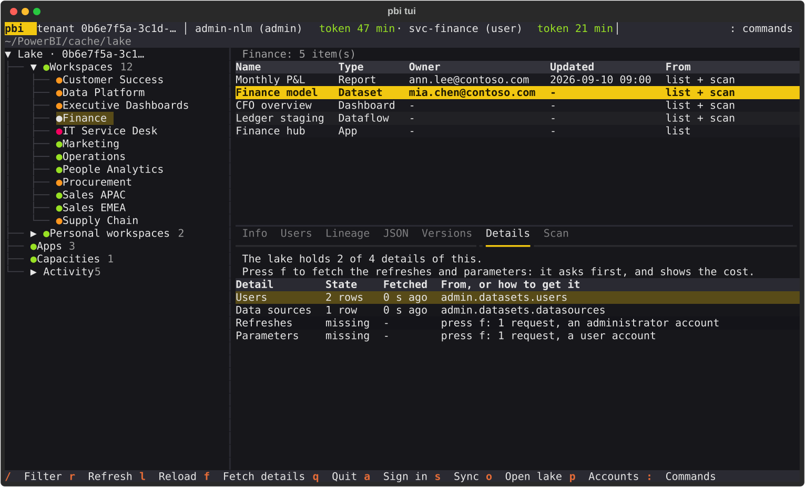
The Details tab (6) lists what an item can have (a report: users, pages; a dataset:
users, data sources, refreshes, parameters; a dashboard: users, tiles; a dataflow: users,
data sources; a workspace: users), what the lake holds of each (how many rows, from which
operation, how old) and what to do about what it lacks. Press f to fetch the missing ones:
the dialog shows what will be requested, for this item and no other, and how that compares with
the quota, and Fetch runs it. The same row is selected again afterwards, now with the
details filled in. On the Users tab f fetches only the users.
- Which account. An administrator's account is used when there is one (it needs no permission on the item), else a user's. What only one kind can read is said: the refresh history, the parameters and the tiles of a dashboard need a user account; who has access to a report or a dashboard needs an administrator's.
- When a user is refused. A user can read the users of a dataset only with Reshare
permission on it, and its data sources and refresh history only with Write permission. When
the answer is
403the tab says refused and names the permission, and another account may do better (p). - Cost. Fetching a detail for one item may also read a list it depends on, when the lake holds no fresh one (the dialog says so): the datasets of the tenant for a dataset, the workspaces and datasets of the user for a user account.
- A lake that is only looked at fetches nothing: the tab says view only.
The command palette offers the same, as the name of what it would fetch (Fetch the users and
data sources of Finance model).
The Lineage tab follows what the scan of the workspace says (it needs a scan with
--lineage, and says so when the scan was made without):
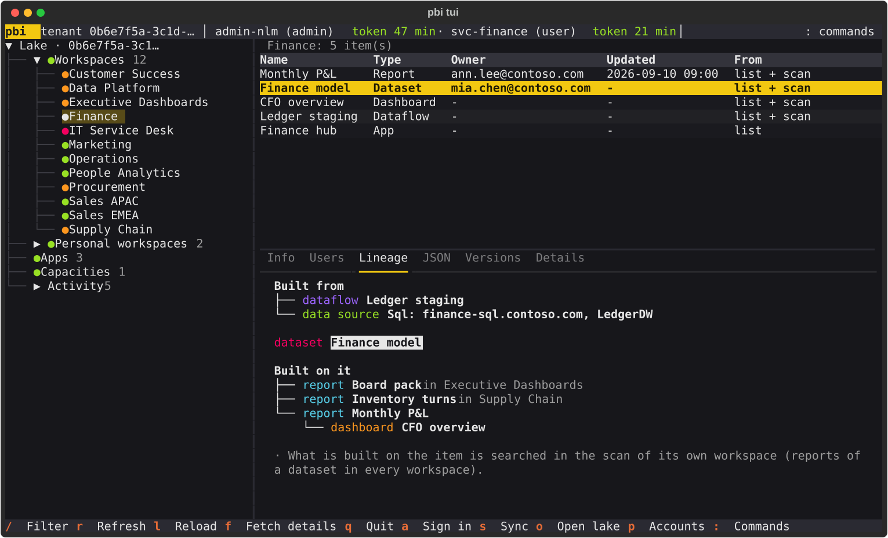
- Built from: a report's dataset; a dataset's upstream dataflows, datasets and data sources; a dashboard's reports and datasets (its tiles). It is followed across workspaces, as far as the scans in the lake reach.
- Built on it: the reports of a dataset, from the lists of the whole tenant, and everything else (datasets on a dataflow, dashboards on a report) from the scan of the item's own workspace. Another workspace may build on the item without the lake knowing; the tab says so.
Finding things¤
/filters what has the focus: the workspaces of the tree, or the rows of the table. All the words you type must be in the row (case does not matter), soreportalso finds the reports of a workspace.Escclears the filter. A table shows at most 2,000 rows and the tree 5,000 workspaces; the filter narrows them.:orCtrl+Popens the command palette. Type a name to jump to a workspace, report, dataset, dashboard or dataflow, wherever it is, or the name of a command to run it.TabandShift+Tabmove between the tree, the table and the tabs; the arrow keys andEntermove and open nodes, and the mouse works.
Reading the lake again, and fetching again¤
The UI reads the lake when it starts and again after every sync it runs. If something else
syncs while it is open, for example a nightly pbi sync run, press l to read the lake
again.
r fetches again what you have selected, after asking. The dialog shows what will be
requested and how that compares with the quota:
| Selected | What r fetches |
|---|---|
| a workspace (its node, whatever row of it is selected), or a workspace picked in the list of workspaces | a scan of that one workspace, with the options of its last scan (lineage when it was never scanned): about five requests of the scan quota |
| the Lake, Workspaces or Personal workspaces | the lists of the tenant: workspaces, apps, capacities, reports, datasets, dashboards and dataflows |
| Apps, Capacities | that list |
| Activity | the audit events (a complete day is never fetched again) |
It is the same engine as pbi sync run, so the same rules hold: the quotas are kept,
a request waits for a short quota, and what the quota holds back is fetched next time.
With only a user account an administrator's scan or tenant list is not possible, so
r on a workspace, the Lake or Workspaces fetches what you can see instead (the
workspaces of the account, their reports, datasets, dashboards and dataflows, and its
apps), r on Apps fetches the apps of the account, and r on Capacities or Activity says
that only an administrator account can fetch them. See Accounts.
The Sync screen¤
Press s to plan and run a sync, and Esc (or e) to go back to the Explorer.
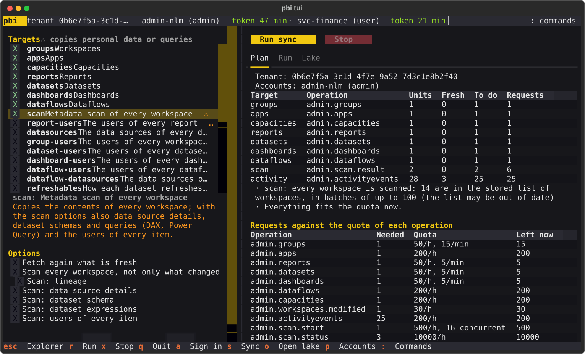
- Targets (left): the same targets as
pbi sync. The plain ones are chosen at first; the ones marked ⚠ copy personal data or queries, and a note under the list says what each one copies. Nothing is fetched until you run. A target whose account is not stored is dimmed and cannot be chosen, and the note says which account it needs (see Accounts). - Options: fetch again what is fresh (
--force), scan every workspace, the options of the scan, the days of audit events and how many requests go at once. - Plan (right): what the sync would do and what it costs, worked out from what the lake
holds, with the requests it needs against the quota that is left. It is the plan of
pbi sync plan, updated as you change the targets and the options. Where something does not fit the quota now, it says what is held back. - Run sync starts it, and Stop ends it. A sync that is stopped finishes the requests in flight and starts nothing new, and a request that waits for quota gives up at once. What is done is kept: run the sync again and it continues, because what the lake holds fresh is not fetched twice. Only one sync runs at a time.
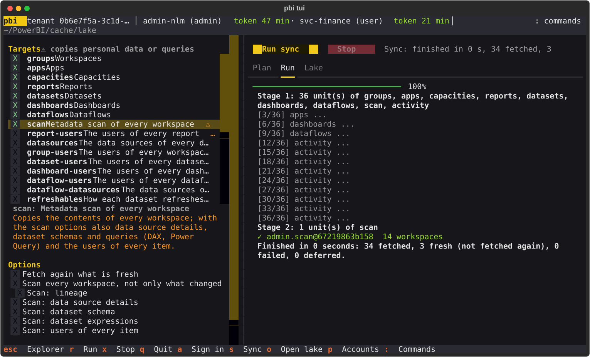
The Run tab logs every unit of a small stage and the progress of a big one, with every
failure and every unit that a quota held back, in the words of pbi sync run. The
Lake tab is pbi sync status: what the lake holds for each target, how the last sync
went, the units that failed or were held back, the last complete scan, and the quota left.
A sync goes on while you look at the Explorer: the header shows it, and the Sync screen
shows its log from the start when you open it again.
A sync that ends with failures or held-back units says so in a notice that stays for fifteen
seconds (the others vanish after five), and the notice names the first problem: First
failure: admin.reports: ..., or First held back: admin.reports, to be tried again in 12
min. The Run tab has all of them.
With a plan file¤
pbi tui --config pbi-plan.yaml opens the UI with a plan file, which says
what to keep, for which workspaces and through which account. The Sync screen then shows the
file instead of the targets and the options:
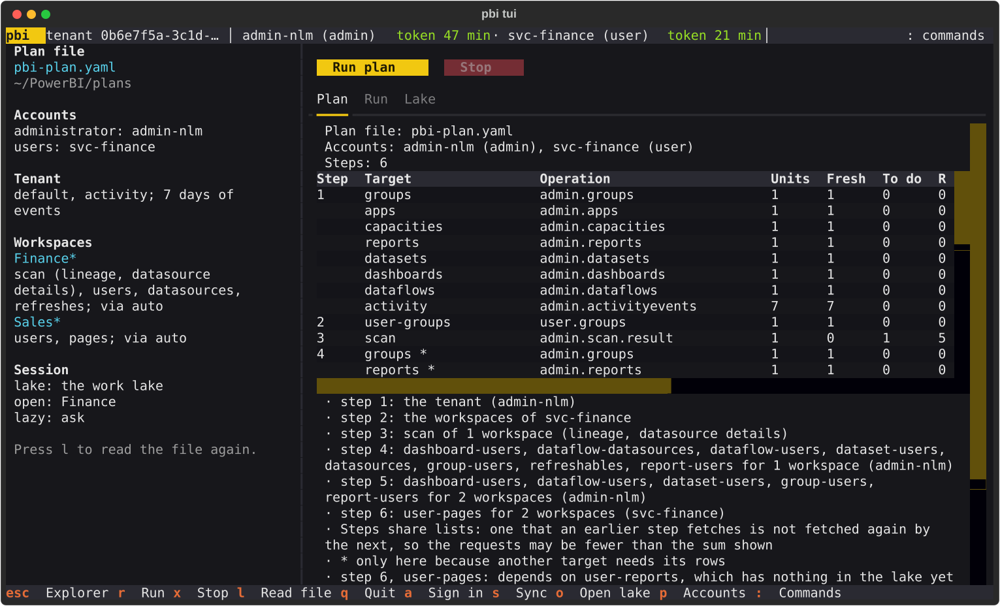
- The file (left): the accounts, the tenant, each entry for the workspaces and the
settings of the session.
lreads the file again (a file that is wrong is said in a message and the one in use stays), and the plan follows. - The plan (right) is the one of
pbi sync plan --config: one table for all the steps, with the number of the step, the requests that all of them need against the quota of each operation, and under it the steps in words, the names that match no workspace yet, and the notes of the steps. The steps for the workspaces are worked out after the tenant's: before the lake has the list of workspaces, the plan says which names it cannot look up yet. - Run plan goes through the steps one after the other, and the Run tab logs
Step 1: ...,Step 2: ...and the stages of each. Stop ends it between units. A token that expires stops it, the dialog asks for the token of the account that expired (the kind and the profile, which the plan can use several of) and the plan goes on from the step it was in.
The session section of the file sets three things:
lake: the lake to open.--lakeandPBI_LAKEcome first, then the file, then your work lake. Any lake but your work lake is opened read-only, and there the plan is not run.open: a workspace to select at the start, by id or by a pattern for its name (the first match). It is selected once, not again when the lake is read again.lazy: what the Explorer does about a detail the lake lacks.ask, the default, does nothing until you pressf.offoffers nothing: the Details tab says so andfsays that fetching on demand is switched off.autofetches by itself the details of the item you stay on for a moment (one and a half seconds), and only the harmless ones: those whose way of fetching copies no personal data, queries or connection details (the pages of a report, the tiles of a dashboard, the refresh history of a dataset by a user's account), by an account that is stored, not one that refused them the last time, while more than half of the smallest allowance of the operation is left. It does not start while a sync runs, never writes into a lake that is only looked at, and tries a detail once per session. A message says what it fetches.
Signing in again¤
The header shows every account you are signed in as (the administrator and the user, as far
as they are stored), and how long each token lasts: green, then yellow in the last ten
minutes, then red when it has expired. With a plan file these are the accounts
that the file names (accounts), each user account on its own, and everything the session
fetches goes through them: the plan, and also what f and lazy: auto fetch for one item,
which uses the first user account of the file whose own list of workspaces holds the
item's workspace (else the first one). A kind that the file does not name is the active
profile of the kind. Browsing does not need a token, but pbi sync does.
When a sync or a refresh finds that a token is missing or has expired, the UI asks for a
new one at once, for the kind of account that is the problem (a sync of user-... targets
asks for the user's token, not the administrator's). You can also press a at any time.
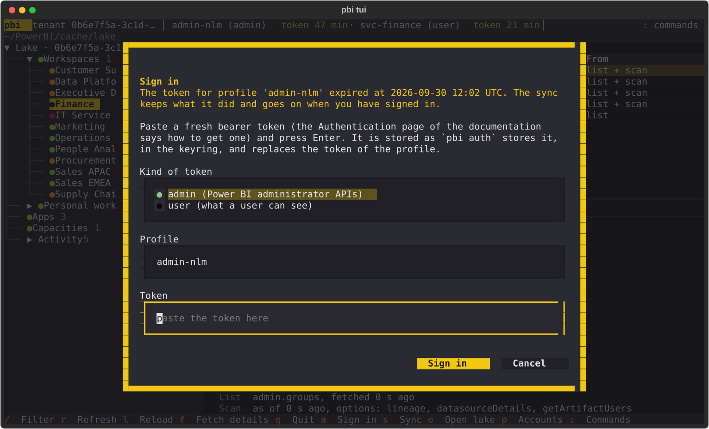
Paste the token (the field is masked) and press Enter. Choose the kind of token, admin
or user, and the profile; the profile is the active one of the kind, so its token is
replaced (a new profile name stores a new account). The token is stored exactly as
pbi auth stores it, in the keyring. Then the sync that was interrupted starts
again, and continues where it stopped.
A token that has expired already, or expires within half a minute, is not stored: the
dialog says when it expired and waits for another, because storing it would only make the
next request ask again. (A token that says nothing about its expiry is stored: Power BI
decides.) If the sync that goes on is stopped by the same account again, the dialog that
opens says that the token that was just stored was refused as well, followed by the reason:
that it had expired, or that Power BI answered 401 Unauthorized (a token of another
account or tenant, or one that was pasted damaged). A different account that has run out as
well is asked for as itself, one dialog after the other, as many as there are accounts that
expired; the header shows how long each lasts, so you can see beforehand which will. Each
question and each token stored is a line in the log file ~/.pbi_cli/tui.log.
Accounts¤
You need one account, of either kind (see Authentication).
Press p for the Accounts dialog: the profiles stored with pbi auth, both groups, with
who each token is for (read from the token), its tenant, whether it is the active profile of
its group and how long it lasts.
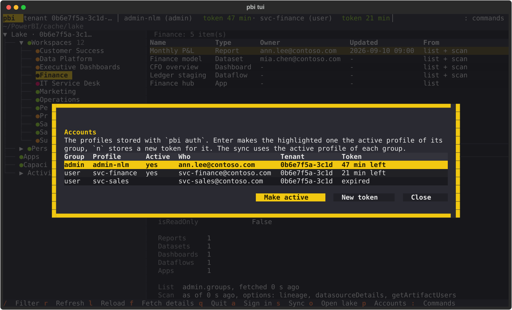
Enter (or Make active) makes the highlighted profile the active one of its group, the
same as pbi profile switch, and the sync uses it from then on. n (or New token)
opens the sign-in dialog for that profile, which is how an expired token is replaced. A
profile that has no token stored says so.
Only a user account¤
Without an administrator account the UI works with what a user can see:
- The Sync screen dims the administrator's targets, says why under the list, and chooses
the plain targets of a user: the workspaces of the account and their reports, datasets,
dashboards and dataflows, and the account's apps (
user-groups,user-apps,user-reports,user-datasets,user-dashboards,user-dataflows). Press Run sync and the Explorer shows them like the tenant's lists, for the workspaces that account is a member of. rin the Explorer fetches what you can see (see above).- What needs an administrator (the scan, the users of reports, data sources, audit events, capacities) is not offered, and says so.
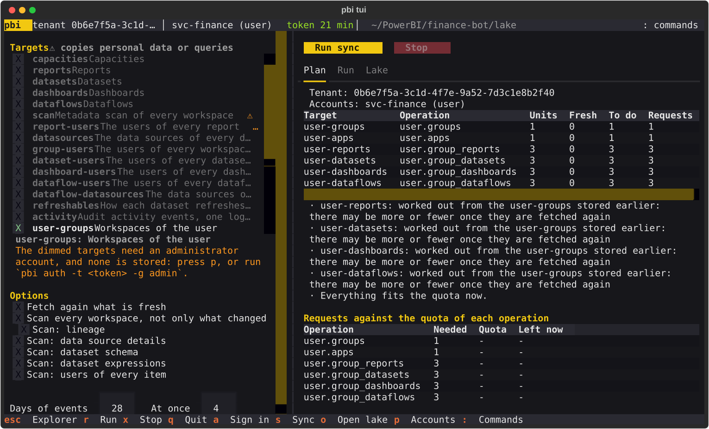
With both accounts the administrator's lists and scans give the tenant, and the user's lists add the workspaces that only that account can open, and say who sees what in Visible to. Where both have an item, the administrator's wins.
Tenants¤
A lake keeps each tenant apart. The UI shows the tenant of your token; with no token it
shows the only tenant in the lake, or asks which one when there are several. Press t to
choose another tenant.
Other lakes, and view only¤
The UI shows the lake of your cache folder, your work lake, unless you say otherwise.
pbi tui --lake <folder or s3://bucket/folder> opens another lake, such as one that a
colleague published, and so does o inside the UI: the dialog lists your work
lake and the lakes you opened lately, or you type a place. If the lake cannot be read, a
message says why and the lake that was open stays open.
A lake opened this way is read-only, and the header says view only (and, for a
published lake, who published it and when). Nothing can be fetched into it and no account is
needed: the UI does not look up a token, signing in and r say that the lake is only looked
at, and Run on the Sync screen is off. Everything that only reads works as before: the
tree, the tables, the tabs, the filters, Ctrl+P and the Lake tab of the Sync screen. Only
your work lake is ever written by a sync; open it again with o to fetch.

Keys¤
| Key | Where | What it does |
|---|---|---|
q |
everywhere | quit |
s |
Explorer | open the Sync screen |
Esc, e |
Sync | back to the Explorer |
a |
everywhere | sign in: store a fresh token |
p |
everywhere | the accounts: make a stored profile active, or store a new token for it |
t |
everywhere | choose the tenant |
o |
everywhere | open another lake (view only), or the work lake again |
:, Ctrl+P |
everywhere | the command palette: search every action and run it, or jump to a workspace or an item by name |
/ |
Explorer | filter the tree or the table, whichever has the focus |
Esc |
Explorer | clear the filter |
r |
Explorer | fetch again what is selected |
l |
Explorer | read the lake again |
1 to 6 |
Explorer | Info, Users, Lineage, JSON, Versions, Details |
f |
Explorer | fetch the details of the selected item that the lake lacks (the users, on the Users tab) |
r |
Sync | run the sync (the plan, with a plan file) |
x |
Sync | stop the sync |
l |
Sync, with a plan file | read the plan file again |
1 to 3 |
Sync | Plan, Run, Lake |
Limits¤
- It shows what the lake holds. A workspace that was never scanned has its name, its type and the counts of the lists; each tab says what to sync to get the rest.
- A table shows at most 2,000 rows, the tree 5,000 workspaces and the JSON tab 1,500 lines. A filter narrows the tree and the table; the full answer is in the folder of the lake that the JSON tab names.
- The lake can be in S3, as for every command, but the UI has only been tried on a local folder and on a stand-in for S3 on disk. Reading a lake lists every scan that is stored, which takes a while over the network when there are thousands. See Sharing a lake.
- It does not watch the lake:
lreads it again.
For developers¤
The UI is pbi_cli.tui (Textual); everything it shows comes from
pbi_cli.core.catalog, a read model over the lake that has no terminal in it and can be
used from a script:
from pbi_cli.core.catalog import Catalog
from pbi_cli.core.store import LakeStore
catalog = Catalog(LakeStore("~/PowerBI/cache/lake"), tenant="0b6e7f5a-3c1d-4f7e-9a52-7d3c1e8b2f40")
for item in catalog.items("<workspace id>"):
print(item.kind, item.name, catalog.users(item).rows)
lineage = catalog.lineage(catalog.item("dataset", "<dataset id>"))
The tests drive the real app with Textual's test pilot against the fake Power BI service of
the tests (tests/test_tui_*.py). The pictures on this page are made from the real app by
uv run python scripts/gen_tui_screenshots.py, on a made-up tenant.